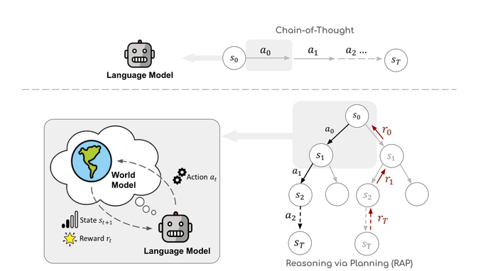
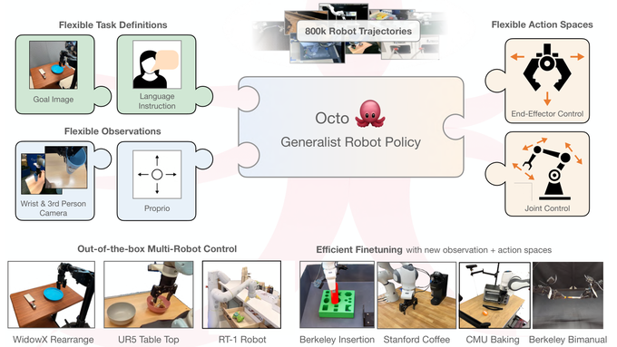
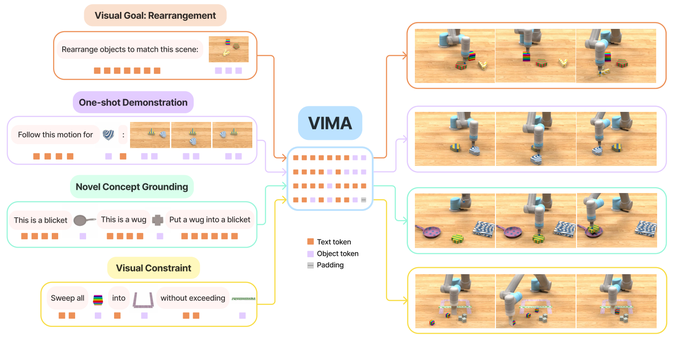
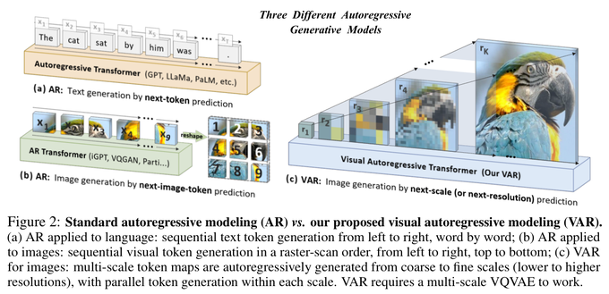
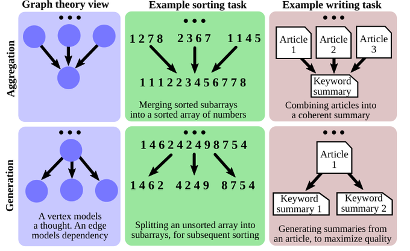
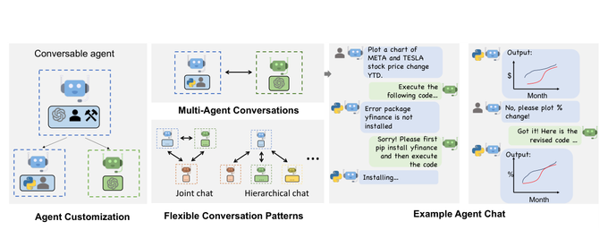
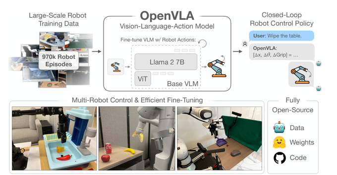

Tree of Thoughts: Deliberate Problem Solving with Large Language Models
A real tree node anchors a local operation enlargement.
Images are crops from saved original paper PDFs, not generated lookalikes. PDF page means the physical 1-based page of the saved version. Click a picture for its full-resolution crop. At 680 px preview width, fine labels that disappear should not be borrowed at paper scale.
A real tree node anchors a local operation enlargement.

One macroscopic flow is explained by indexed local details.

A concrete work artifact receives distinct sources of guidance.

One compact agent/world-model pair is linked to an actual search tree.

A single illustrated scientific object binds inputs and outputs.

Real state images carry the transition; labels stay secondary.

Repeated state silhouettes make incremental change visible.

The graph itself encodes operations, with no duplicate abstract graph.

Stable aligned state slots show what changes during a rollout.

Repeated small agent silhouettes distinguish actor identity, but dense mini-panels fail paper scale.

Photographs separate real tasks from the internal policy; mixed icon styles are a caution.
{kind=link}
{kind=link}
{kind=link}
{kind=link}
{kind=link}
{kind=link}
{kind=link}